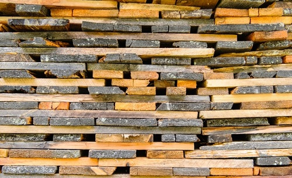

The number of visitors is : 0
Välkommen till
Ett elektronikföretag inom industriell automation
Ett elektronikföretag inom industriell automation
Nolyx levererar färdiga systemlösningar för alla typer av industrier, samt utför tjänster inom el-projektering, el-konstruktion, och programutveckling. Nolyx är inte ett fabrikats bundet företag och vi är vana att i varje enskilt projekt välja den utrustning som är mest lämplig, både med tanke på ekonomi och driftsäkerhet. Vi är vana vid funktionsåtaganden där leveranssäkerhet och kvalitet är tungt vägande krav. Vi har stor och lång erfarenhet av att genomföra totalprojekt mot både svensk och utländsk industri. Vi utför kompletta projekt inom framförallt industriella automatiseringar för produktions- och processtyrning, baserade på teknik med datorer och styrsystem. Marknaden utgörs av processindustri där Träindustrin är vår bas. Service och eftermarknad är också ett viktigt arbetsfält där vi utför service och felsökning på alla typer av el-utrustning.
Projektering

Utifrån vår breda erfarenhet kan vi svara för projektledning, förprojektering, samt utredning. Genom att vara delaktiga i projekten på ett tidigt stadium, kan vi offerera och leverera kostnadseffektiva lösningar med hög prestanda och kvalitet.
Konstruktion
Vi utför alla typer av elkonstruktion:
- Kontaktorskåp
- Fördelningscentraler
- Frekvensomriktare
- Servostyrning
- PLC-system
- Operatörsterminaler
- Operatörspaneler
- HMI-system
- Fältbussar
- Decentraliserade I/O
Säkerhet

Tjänster inom säkerhet:
- Övergripande projektledning
- Genomgång av säkerhetsstatus
- Framtagande av riskanalys
- Utförande av kompletta systemlösningar för elektriska säkerhetskretsar
Vi har erfarenhet av flera på marknaden förekommande Säkerhets-PLC:
- Siemens
- Pluto
Service

Serviceuppdrag kan ske både på egen-tillverkad utrustning och på utrustning som är levererad av andra företag. Vi utför service och felsökning på alla typer av anläggningar och maskiner. Serviceuppdrag kan även utföras via fjärranslutning, där uppkopplingar med telefon-modem, GSM-modem, och/eller Internet är möjliga.
IT-tjänster

Vi utför olika typer av IT-tjänster
- Microsoft.Net
- Microsoft SQL Server
- Microsoft VB6
- Web Services
- Andriod Apputveckling
PLC Programmering

Vi har många års erfarenhet av de flesta på marknaden förekommande PLC-system och operatörsterminaler:
- Siemens 1500
- Siemens 1200
- Siemens S5
- Siemens S7
- Mitsubishi Melsec A
- Mitsubishi Melsec Fx
- Mitsubishi Melsec Q
- Allen Bradley
- Modicon
- Omron
- Hitachi
- Telemecanique
Vi är vana att arbeta med olika typer av fältbussar:
- Profibus-DP
- ASI-nätverk
- Ethernet
- Profinet
- Olika former av seriekommunikation
Scada/HMI-system:
- Siemens WinCC
- Wonderware Intouch
Buntlinje
- SCA Stoke - 2013 Buntlinje / Bundle line
- Palfab Timber - Levene Såg AB - 2009 Buntlinje / Bundle line
- UPM Kymmene - Zao Pestovo Novo - 2008 Buntlinje / Bundle line
- Kontiotuote OY - 2007 Buntstaplare / Bundle station
- Forsa Trä AB - 2006 Buntlinje / Bundle-line
- Västerdala Träkomponenter AB - 2006 Buntlinje / Bundle-line
- Moelven Treinteriör AS - 2003 Buntning och foliering / Bundling with shrink film
Fingerskarvslinje
- Martinssons - 2020 Fingerskarvslinje / Finger jointing line
- Moelven Langmoen - 2012 Fingerskarvslinje / Finger jointing line
- Alvdal Skurlag AS - 2007 Fingerskarvslinje / Finger jointing line
- Ringalm Tre AS - 2006 Fingerskarvslinje / Finger jointing line
- Haslestad Bruk AS - 2005 Fingerskarvslinje / Finger jointing line
Hyvellinje
- Kurekss SIA - 2020 Hyvellinje / Planingline
- Gefle Wood AB - 2020 Kupmätare / Cup measurement
- Valbo Trä AB - 2020 Buntharpa / Bundle line
- Valbo Trä AB - 2019 Hyvellinje 1 / Planingline 1
- NWP - Hissmofors - 2019 Paketläggare Hyvleri / Pack machine Planingline
- Hollandse Houtimport - 2019 Hyvellinje / Planingline
- Svenska Fönster AB - 2018 Ombyggnad Hyvellinje / Rebuilding of Planingline
- Sveden Trä - Rågsveden - 2018 PLC-byte Hyvellinje / PLC change Planingline
- Valbo Trä AB - 2018 Hyvellinje 3 / Planingline 3
- SCA Timber Supply LTD - 2018 Ombyggnad Hyvellinje / Rebuilding Planingline
- Möre Tre AS - 2017 Hyvelinmatning / Planer infeed
- Siljan Wood Products AB - 2017 PLC-byte Hyvellinje / PLC change Planingline
- Setra - Skutskär - 2016 Hyvellinje / Planingline
- Kurekss SIA - 2016 Ombyggnad Hyvellinje / Rebuilding of Planingline
- Nørlund Træ A/S - 2016 Hyvellinje Rosgrade / Planingline Rosgrade
- Siljan Wood Products AB - 2015 Ombyggnad Hyvellinje / Rebuilding of Planingline
- NWP - Hissmofors - 2015 Bläckstråleskrivare Hyvellinje / Incjet printer Planingline
- SCA Timber AB - Jämtlamell - 2015 Etikettapplikator Hyvellinje / Label applicator Planingline
- NWP - Hissmofors - 2015 Paketstaplare & Emballageutläggare / Pack lift & Automatic foil roller
- Moelven Notnäs AB - 2014 Ombyggnad Hyvellinje / Rebuilding of Planingline
- Moelven Langmoen AS - 2014 Ombyggnad Hyvellinje / Rebuilding of Planingline
- Ringalm Tre AS - Brumund Sag - 2014 Ombyggnad Hyvellinje / Rebuilding of Planingline
- Moelven Österdalsbruket AS - 2014 PLC byte Hyvellinje / PLC change Planingline
- NK Lundströms Trävaror AB - 2014 Hyvelinmatning / Planer infeed
- Nørlund Træ A/S - 2014 Stopptidsregistrering Hyvellinje / Stop time report Planingline
- Fegens Sågverk AB - 2013 Registrering Hyvellinje / Registration Planing line
- Nørlund Træ A/S - 2013 Hyvellinje / Planingline
- Stangeskovene AS - Björnstad Bruk - 2013 Ombyggnad Hyvellinje / Rebuilding of Planingline
- NWP - Hammerdal - 2013 PLC-byte Hyvellinje / PLC-change Planingline
- SCA Timber Supply LTD - 2013 Hyvellinje / Planingline
- NWP - Hissmofors - 2013 Etikettapplikator Hyvellinje / Label applicator Planingline
- Sveden Trä AB - 2012 Registrering Hyvellinje / Registration Planing line
- Kuusisto Group - 2011 Hyvellinje / Planingline
- NWP - Hissmofors - 2011 Ombyggnad Hyvellinje / Rebuilding of Planingline
- Moelven Valåsen AB - 2011 Ombyggnad Hyvellinje / Rebuilding of Planingline
- TräTeam Br.Nyberg AB - 2011 Ombyggnad Hyvellinje / Rebuilding of Planingline
- Siljan Wood Products AB - 2010 Hyvellinje / Planingline
- AS Rait - 2010 Ombyggnad Hyvellinje / Rebuilding of Planingline
- Versowood OY - 2009 Hyvellinje / Planingline
- Åshammars Hyvleri & Trävaru AB - 2009 Hyvellinje / Planingline
- Stora Enso - Stora Timber Amsterdam - 2009 Ombyggnad Hyvellinje / Rebuilding of Planingline
- Rågsvedens Såg AB - 2009 Ombyggnad Hyvellinje / Rebuilding of Planingline
- TräTeam Br.Nyberg AB - 2009 Ombyggnad Hyvellinje / Rebuilding of Planingline
- Van Wessem Houtbewerking - 2008 Hyvellinje / Planingline
- Alvdal Skurlag AS - 2008 Hyvellinje / Planingline
- Arbor Forest Products - 2008 Hyvellinje 1 Vaco / Planingline 1 Vaco
- Arbor Forest Products - 2008 Hyvellinje 2 Ledermac / Planingline 2 Ledermac
- Edsbyns Hyvleri AB - 2008 Ombyggnad Hyvellinje / Rebuilding of Planingline
- Moelven Österdalsbruket AS - 2008 Ombyggnad Hyvellinje / Rebuilding of Planingline
- Lauta OY - 2008 Hyvellinje / Planingline
- SCA Timber AB - Jämtlamell - 2008 Hyvellinje / Planingline
- Kurekss SIA - 2007 Hyvellinje / Planingline
- Levene Såg AB - 2007 Hyvellinje / Planingline
- Moelven Valåsen AB - 2007 Hyvellinje / Planingline
- Moelven Våler AS - 2007 Hyvellinje / Planingline
- Setra Trävaror AB - Valbo - 2007 Ombyggnad Hyvellinje / Rebuilding of Planingline
- NWP - Hissmofors Såg - 2007 Hyvelintag / Planer infeed
- UPM Kymmene - Zao Pestovo Novo - 2006 Hyvellinje / Planingline
- M.H Southern & CO Ltd - 2006 Hyvellinje / Planingline
- Moelven Soknabruket AS - 2006 Hyvellinje / Planingline
- Carl Rundberg AB - 2006 Hyvelintag / Planingline
- Anaika Components OY - 2006 Balkhyvellinje / Beam Planingline
- Stora Enso Timber Ltd - Alytus AS - 2006 Ombyggnad Hyvellinje / Rebuilding of Planingline
- AB Karl Hedin - Karbenning - 2006 Hyvellinje / Planingline
- AB Lundquist & Lindroth - 2005 Hyvellinje / Planingline
- Anaika Components OY - 2005 Balkhyvellinje / Beam Planingline
- BSW Newbridge - 2005 Hyvellinje / Planingline
- Stangeskovene AS - Björnstad Bruk - 2005 Hyvellinje / Planingline
- Balcas Esti AS - 2005 Hyvellinje / Planingline
- AS Rait - 2005 Ombyggnad Hyvellinje / Rebuilding of Planingline
- Södra Timber AB - Värösågen - 2005 Hyvellinje / Planingline
- Stora Enso Timber Ltd - Alytus AS - 2005 Ombyggnad Hyvellinje / Rebuilding of Planingline
- Pintopuu OY - 2005 Hyvellinje / Planingline
- Balcas Timber Ltd - 2005 Hyvelintag / Planer infeed
- Stora Enso Timber Ltd - Näpi Saeveski - 2004 Hyvellinje / Planingline
- Moelven Österdalsbruket AS - 2004 Hyvelintag / Planer infeed
- AB Lundquist & Lindroth - 2004 Flytt av Hyvellinje / Moving Planingline
- Junnikkalan Saha OY - 2004 Hyvellinje / Planingline
- Ringalm Tre AS - Naeroset - 2004 Hyvelintag / Planer infeed
- Rågsvedens Såg AB - 2003 Hyvellinje / Planingline
- Moelven Notnäs Wood AB - 2003 Hyvellinje / Planingline
- MCM Timber OY - 2003 Hyvellinje / Planingline
- Stora Enso Timber Ltd - Kiteen Saha - 2003 Hyvellinje / Planingline
- Glennon Bros Ltd - 2003 Ombyggnad Hyvellinje / Rebuilding of Planingline
- Hamina Veistosaha OY - 2003 Hyvellinje / Planingline
Justerverk
- AB Hilmer Andersson - 2020 Justerverk / Dry-sortingline
- ELE Trävaru AB - 2019 Paketintag och Tilt / Pack infeed and Tilthoist
- Moelven Våler AS - 2018 Ombyggnad Justerverk / Rebuilding of Dry- sortingline
- Eidskog Stangeskovene AS - Vikodden Bruk - 2018 Justerverk paketering / Dry-sortingline packaging
- ELE Trävaru AB - 2018 Tilt till Justerverk / Tilthoist in Dry- sortingline
- Balungstrands Sågverk AB - 2017 Justerverk / Dry-sortingline
- AS Laesti - 2016 Justerverk / Dry-sortingline
- Balungstrands Sågverk AB - 2016 Justerverk / Dry-sortingline
- Moelven Våler AS - 2015 Ombyggnad Justerverk / Rebuilding of Dry-sortingline
- Liareds Trävaror AB - 2015 Ombyggnad Justerverk / Rebuilding of Dry-sortingline
- Balungstrands Sågverk AB - 2015 Justerverk paketering / Dry-sortingline packaging
- Moelven Våler AS - 2014 Ombyggnad Justerverk / Rebuilding of Dry- sortingline
- Kharovsklesprom LCC - 2013 Justerverk / Dry-sortingline
- Liareds Trävaror AB - 2012 Justerverk / Dry-sortingline
- Amur Forest - 2009 Flyttning av Justerverk / Moving of Dry sorting line
- JSC Lesosibirsky Ldk No1 - 2008 Justerverk / Dry-sortingline
- Moelven Våler AS - 2007 Justerverk / Dry-sortingline
- Taylormade Timber Products Ltd - 2006 Justerverk / Dry-sortingline
- Svegs Såg AB - 2006 PLC-byte Justerverk / PLC-change Dry-sortingline
- HMS Holz Hagenow - 2004 Ombyggnad Justerverk Centrumlinje / Dry-sortingline Centre
- HMS Holz Hagenow - 2004 Ombyggnad Justerverk Brädlinje / Dry-sortingline Board
- Hamina Veistosaha OY - 2003 Justerverk / Dry-sortingline
Klyvlinje
- NWP - Hissmofors Såg - 2019 Klyvlinje / Resawline
- Hasås AS - 2019 Klyvlinje / Resawline
- Flaen Sag & Høvleri AS - 2015 Klyvlinje / Resawline
- Forestar S.A. - 2013 Paketläggare Klyvlinje / Stacker Resaw line
- Forestar S.A. - 2012 Klyvlinje / Resaw line
- InnTre AS - 2010 Klyvlinje / Resawline
- Åshammars Hyvleri & Trävaru AB - 2009 Klyvlinje / Resawline
- Törnträ AB - 2008 Klyvlinje / Resaw line
- Stangeskovene AS - Björnstad Bruk - 2006 PLC-byte Klyvlinje / PLC-change Resawline
- Åshammars Trä AB - 2006 Klyvavlägg / Resaw sidepusher
- Moelven Van Severen AS - 2003 Klyvlinje / Resawline
- Stora Enso Timber Ltd - Kotka Sawmill - 2003 Klyv- och Buntlinje / Resaw- and Bundle-line
Kombiverk
- Red October - 2017 Ombyggnad Kombiverk / Rebuilding of Sorting line combi
- Karl Segerström AB - 2017 PLC-byte Kombiverk / PLC change Sorting line combi
- Red October - 2015 Ombyggnad Kombiverk / Rebuilding of Sorting line combi
- Nørlund Træ A/S - 2013 Kombiverk / Sorting line combi
- Red October - 2012 Kombiverk / Sorting line combi
- Karl Segerström AB - 2010 Kombiverk / Sorting line combi
- MCM Timber OY - 2003 Kombiverk / Dry- and Greensortingline
Målningslinje
- Valbo Trä AB - 2019 Ombyggnad Målningslinje / Rebuilding Painting line
- Sveden Trä - Träkomponenter - 2017 PLC-byte Målningslinje / PLC change Painting line
- Siljan Wood Products AB - 2016 Målningslinje / Painting line
- Brandens AB - 2013 Målningslinje / Painting line
- Västerdala Träkomponenter AB - 2011 Registrering Målningslinje / Registration Painting line
- Västerdala Träkomponenter AB - 2009 Målningslinje / Painting line
Paketläggare
- Moelven Granvin Bruk AS - 2013 Paketläggare / Stacker
- Versowood OY - 2008 Paketläggare / Stacker
- Land Sag AS - 2007 PLC-byte Paketläggare / PLC-change Stacker
- Valbo Trä AB - 2007 Paketläggare / Stacker
- Kährs Trävaru AB - 2006 Paketstaplare / Stacker
- Berneck Aglomerados SA - 2006 Paketläggare / Stacker
- Ringalm Tre AS - Brumund Sag - 2005 Paketläggare / Stacker
- NWP - Hissmofors - 2005 Paketläggare / Stacker
- BSW Carlise - 2005 Paketering / Stacker and Packoutfeed
- Valbo Trä AB - 2005 Paketläggare / Stacker
- Forsa Trä AB - 2004 Paketläggare / Stacker
Panna
- Saxwerk AB - Martinssons - 2020 Fastbränslepanna / Solid fuel boiler
- Biogas Arla Gotland - 2020 Ångpanna / Steam boiler
- Siljan Timber AB - 2019 Spånpanna / Chip boiler
- Saxwerk AB - Siljan Timber AB - 2018 Fastbränslepanna / Solid fuel boiler
- Saxwerk AB - Gällö Timber AB - 2017 Fastbränslepanna / Solid fuel boiler
- Saxwerk AB - Hedlunds Timber - 2016 Fastbränslepanna / Solid fuel boiler
- Forestia AS - 2015 Spånplattefabrik, Fastbränslepanna / Particle board factory, Solid fuel boiler
Rotreducerare
- Bruks AB - Metsä Wood - 2020 Rotreducerare / Butt-End Reducer
- Bruks AB - Taylormade Timber Products - 2020 Rotreducerare / Butt-End Reducer
- Bruks AB - Fegens Sågverk AB - 2019 Rotreducerare / Butt-End Reducer
- Bruks AB - Derome AB - 2018 Rotreducerare / Butt-End Reducer
- Bruks AB - Beasley Forest Products - 2018 Rotreducerare / Butt-End Reducer
- Bruks AB - Laird Logs - 2017 Rotreducerare / Butt-End Reducer
- Bruks AB - BSW - 2016 Rotreducerare / Butt-End Reducer
- Bruks AB - Bodafors Trä - 2015 Rotreducerare / Butt-End Reducer
- Bruks AB - UPM Kymmene Seikun Saha - 2015 Rotreducerare / Butt-End Reducer
- Bruks AB - Häberlein GmbH - 2015 Rotreducerare / Butt-End Reducer
- Bruks AB - Grayson Lumber Corporation - 2015 Rotreducerare / Butt-End Reducer
- Bruks AB - Spanish Trail Lumber Company - 2014 Rotreducerare / Butt-End Reducer
- Bruks AB - 2013 Rotreducerare / Butt-End Reducer
Råsortering
- Älgsjö Såg AB - 2018 Ombyggnad Råsortering / Rebuilding of Greensortingline
- Kuusisto Group - 2018 Trimmer till Råsortering / Trimmer in Greensortingline
- John Gordon & Son Ltd - 2018 Ombyggnad Råsortering / Rebuilding Greensortingline
- Barrus AS - 2016 Ombyggnad Råsortering / Rebuilding of Greensortingline
- Vida Wood AB - Nössemark - 2016 Råsortering / Greensortingline
- Barrus AS - 2015 Ombyggnad Råsortering / Rebuilding of Greensortingline
- Bergene Holm - Kirkenaer - 2015 PLC byte Råsortering / PLC change Greensortingline
- Rörvik Timber - Linghem AB - 2015 Råsortering / Greensortingline
- NWP - Sikås - 2015 PLC byte Råsortering / PLC change Greensortingline
- Moelven Våler AS - 2014 PLC byte Råsortering / PLC change Greensortingline
- Barrus AS - 2012 Ombyggnad Råsortering / Rebuilding of Greensortingline
- John Gordon & Son Ltd - 2012 Råsortering / Greensortingline
- Kharovsklesprom LCC - 2012 Råsortering / Greensortingline
- Bergs Timber AB - 2011 Råsortering / Greensortingline
- Älgsjö Såg AB - 2011 Ombyggnad Råsortering / Rebuilding of Greensortingline
- Swedspan Orla - 2011 Råsortering / Greensortingline
- Norrfog AB - 2010 Råsortering / Greensortingline
- AB Rundvirke - 2009 Råsortering / Greensortingline
- Barrus AS - 2008 Råsortering / Greensortingline
- Rågsvedens Såg AB - 2006 Råsortering / Greensortingline
- Tvärskog Timber AB - 2006 PLC-byte Råsortering / PLC-change Greensortingline
- Toftan Sawmill AS - 2003 Råsortering / Greensortingline
Ströläggare / Strörobot
- Plyfa Plywood AB - 2020 Ströläggare / Sticker Stacker
- Kurekss SIA - 2020 Ströläggare med Strörobot / Sticker-stacker with Stick-robot
- Kuusisto Group - 2019 Strörobot / Stick-robot
- AS Laesti - 2018 Registrering Ströläggare / Registration Sticker-stacker
- Schilliger - 2018 Strörobot / Stick-robot
- AS Laesti - 2017 Ströläggare / Sticker-stacker
- Balungstrands Sågverk AB - 2015 Ströläggare med Strörobot / Sticker-stacker with Stick-robot
- Östanåsågen AB - 2015 Strörobot / Stick-robot
- AB Karl Hedin - Säters Ångsåg - 2015 Ombyggnad Ströläggare / Rebuilding of Sticker-stacker
- Balungstrands Sågverk AB - 2012 PLC-byte Ströläggare / PLC-change Sticker-stacker
- Karl Segerström AB - 2010 Ströläggare med Strörobot / Sticker-stacker with Stick-robot
- BSW Carlisle - 2010 Ströläggare / Sticker-stacker
- JSC Lesosibirsky Ldk No1 - 2008 Ströläggare med Strörobot / Sticker-stacker with Stick-robot
- Setra - Horndals Sågverk - 2008 Ströläggare / Sticker-stacker
- Land Sag AS - 2008 Strörobot / Stick-robot
- ELE Trävaru AB - 2007 Ströläggare med Strörobot / Sticker-stacker with Stick-robot
- Myllyahon Saha OY - 2007 Ströläggare med Strörobot / Sticker-stacker with Stick-robot
- Eidskog Stangeskovene AS - 2007 Strörobot / Stick-robot
- Fegens Sågverk AB - 2007 Ombyggnad Strörobot / Rebuilding of Stick-robot
- Rågsvedens Såg AB - 2004 Strörobot / Stick-robot
- MCM Timber OY - 2003 Ströläggare med Strörobot / Sticker-stacker with Stick-robot
- Vida AB - Niab Timber AB - 2003 Ombyggnad Strörobot / Rebuilding of Stick-robot
- Tvärskog Timber AB - 2003 Strörobot / Stick-robot
Säkerhet
- Östanåsågen AB - 2019 Säkerhet Råsortering / Safety Greensortingline
- Älgsjö Såg AB - 2014 Säkerhet Råsortering / Safety Greensortingline
- Sveden Trä - Rågsvedens Såg - 2014 Säkerhet Hyvellinje / Safety Planingline
- Älgsjö Såg AB - 2014 Säkerhet Justerverk / Safety Dry-sortingline
- Iggesund Holmen Group - 2014 Säkerhet utrustning / Safety equipment
- Setra - Färila Sågverk - 2013 Säkerhet utrustning Ströläggare / Safety equipment Sticker-stacker
- Sveden Trä - Dala Floda Golv - 2013 Säkerhet utrustning / Safety equipment
- Karl Segerström AB - 2012 Säkerhet utrustning Kombiverk / Safety equipment Kombiline
- NWP - Hammerdal - 2012 Säkerhet utrustning Hyvellinje / Safety equipment Planingline
- Setra - Färila Sågverk - 2012 Säkerhet utrustning / Safety equipment
- NWP - Östavall - 2012 Säkerhet utrustning / Safety equipment
- Setra - Horndals Sågverk - 2011 Säkerhet utrustning / Safety equipment
- Levene Såg AB - 2011 Säkerhet utrustning Hyvellinje / Safety equipment Planingline
- TräTeam Br.Nyberg AB - 2011 Säkerhet utrustning Hyvellinje / Safety equipment Planingline
- Södra Timber AB - Värösågen - 2010 Säkerhet utrustning Hyvellinje / Safety equipment Planingline
Diverse
- Forestia AS - 2017 Spånplattefabrik, Tork / Particle board factory
- Forestia AS - 2017 Spånplattefabrik, Torrspån / Particle board factory
- NWP - Hissmofors Såg - 2017 Balningslinje
- Södra Timber AB - Värösågen - 2016 Bolsterutläggning / Forklift stick handling
- Best Engineering - Mindsource IKEA - 2016
- Bruks AB - BWSC Cramlington - 2016 Bränslehantering / Fuel handling
- Bruks AB - Göterborgs Energi - 2015 GoBiGas Bränslehantering / Fuel handling
- Forestia AS - 2015 Spånplattefabrik, Filter anläggning / Particle board factory, Filter system
- Maximalfönster i Åshammar AB - 2014 Profillager / Profile storage
- Bruks AB - Falu Energi - 2011 Hugganläggning / Chipper
- Svegs Såg AB - 2011 Paketpress / Package Press
- Catech AB - Gordon Timber - 2011 PLC byte Kantautomat / PLC change Edger optimizer
- Bruks AB - 2010 Barkrivare / Barking machine
- Stora Enso Timber Ltd - Kiteen Saha - 2010 Finscan Endspy
- Moelven Dalaträ AB - 2009 Ombyggnad paketuttag / Rebuilding of pack outfeed
- Bruks AB - Byggkultur AB - 2009 Hugganläggning / Chipper
- Aven Forsa AB - 2009 Paketintag med Bandning / Pack infeed and strapping
- Versowood OY - 2009 Kaplinje / Saw-line Stolplinje / Pool-line
- Anaika Components OY - 2006 Avströningslinje / Re-sticking line
- Exte AB - 2006 Längdsvets maskin / Welding machine
- Stangeskovene AS - Eidskog Bruk - 2005 Paketuttag / Pack outfeed
- Moelven Langmoen AS - 2005 Listlinje / Listline
- Kontiotuote OY - 2005 Ändspontning / Endmatching
- Moelven Edanesågen AB - 2004 Paketpress / Package Press
- Haslestad Bruk AS - 2004 Ströhäckshantering / Stickbox handling
Xylon
Registrerings och Sorteringssystem för Justerverk, Råsortering och Hyvellinje
ProduktbladLäs mer
Dölj
Xylon
Nolyx erbjuder en modern teknik med användarvänliga HMIgränssnitt som är flexibelt för små som stora anläggningar. Vår support är vårt starkaste varumärke och vi ansvarar för helheten. I Xylon ingår kommunikation med kontorsystem, import av köordrar och sorttabeller, paketfiler till kontorsystem, inläsning av artikelregister, produktionsmätning, köorderhantering, stopptidshantering, rapporthantering, recepthantering samt sortbevakning.
Mätning och kapning
Inom mätning och kapning erbjuder vi, vankantsmätning, tjockleksmätning, trimmerstyrning, längdmätning, breddmätning, modulkapning, exaktkapning, kupmätning samt frikapning.
Flexibel hantering av tömning
Med Xylon finns möjligheten att lägga ihop skvättar, ha en enkel redigeringshantering samt att hantera sortbyte. Detta kan hanteras manuellt eller via automatik.
Automatisk paketinformaion
Automatisk paketinformation inom Xylon innebär paketkö från sortering till paketläggare, press/bandning, embellage samt bolster.
Kontakta oss för mer information!
Xylon Remote
Android app för Remote control. Används tillsammans med Xylon för Manuell körning
ProduktbladLäs mer
Dölj
Ett modernare sätt att styra utrustning
Xylon Remote är en Android-app som tillåter manuellkörning av industriutrustning med Xylon på en modern och universel plattform. Appen ger märkbart snabbare tillgång till manuellkörning och ett effektivare arbetsflöde.
Säkert och familjärt
Xylon Remote fortsätter leverera samma säkerhetsstandarder som tidigare utrustning. Appen berättar när den är från- och uppkopplad mot en Xylon-server och låser funktioner om fel uppstår vid uppkoppling.
Gränssnittet är tydligt, responsivt, och lätt att lära sig. Även nybörjare kan komma igång på nolltid!
Kraftpaket i fickformat
Xylon Remote kan köras på alla Android-enheter och levereras på en stryktålig telefon från CAT. Telefonen är snabb, reptålig, damm -och vattentät, och får enkelt plats i din ficka!
Enkel support och felsökning
Android-ekosystemet tillåter smidig support och felsökning, Vår administratörpanel ger möjlighet till snabba modifikationer av appens utseende om så skulle behövas.
Kontakta oss för mer information!
Tomas Wennberg
Telefon: 070 508 81 45 tomas.wennberg@nolyx.se

Mikael Haglund
Telefon: 070 508 81 43 mikael.haglund@nolyx.se

Christer Sörell
Telefon: 070 508 81 49 christer.sorell@nolyx.se

Roger Pettersson
Telefon: 070 508 81 47 roger.pettersson@nolyx.se
Norra Järnvägsgatan 23A 827 31 Ljusdal noly@nolyx.se Telefon: +46 651 133 61